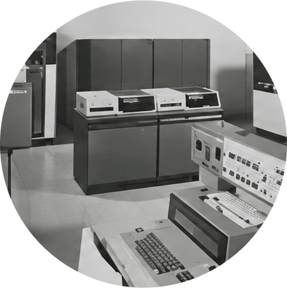
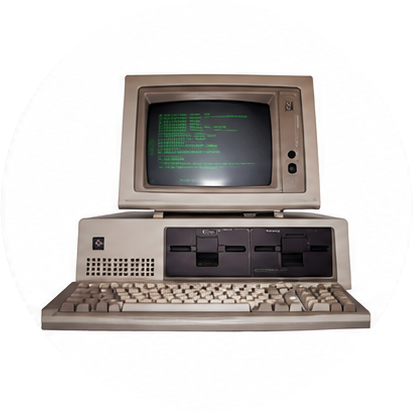
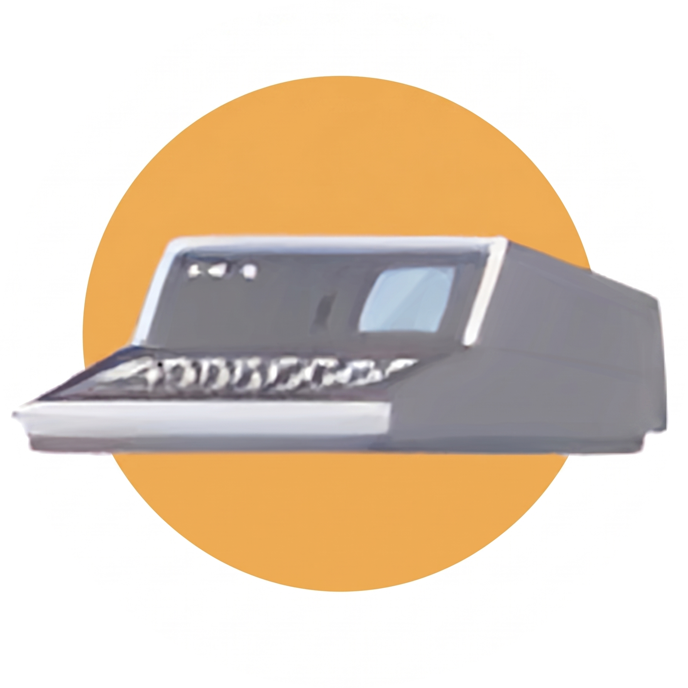

1940 — 2026
Računalniška Zgodovina
Uporabi gumba zgoraj za navigacijo in preklop med svetlim/temnim načinom.
1 / 5
Vakuumske cevi
1940–1956



1940 — 2026
Uporabi gumba zgoraj za navigacijo in preklop med svetlim/temnim načinom.
1940–1956
